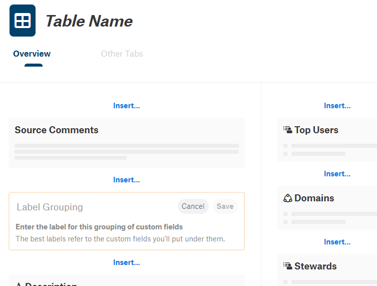

Editing Object Template Layout¶
Alation Cloud Service Applies to Alation Cloud Service instances of Alation
Customer Managed Applies to customer-managed instances of Alation
Applies from release V R6 (5.10.x) to release 2023.1.3
Note
To edit object templates in release 2023.1.4 and later, see Edit Object Templates.
It is possible to customize the layout of object templates in Alation by rearranging built-in and custom fields added to these templates.
Starting with V R6 (5.10.x), you can customize the layout of components on Table and Column object templates.
V R7 (5.12.x) adds the same ability for the Data Source and Schema object templates.
Note
Starting with V R7, you can customize the layout of object templates of:
Data Source
Schema
Table
Column
You need a Catalog or Server Admin admin role to edit object templates.
Object Template Customization Overview¶
When you first open the default catalog page of a data object, data source, schema, table, or column, in the freshly installed Alation catalog, it only has default fields organized into two sections: a wider main section and a narrower right-hand section:
However, you can customize the number of fields and their layout by customizing the underlying template.
Object Template Components¶
A template always has such components as built-in fields. These are the default fields that appear on the catalog page before any customizations are applied. A page can also have custom fields and groupings of custom fields, which are the components that admins can create, add to, and remove from templates.
Unlike custom fields, built-in fields depend on the type of object and cannot be added or removed from templates. However, for Data Source, Schema, Table, and Column pages, you can change the arrangement of built-in fields in each respective template section.
Finding the Object Templates in the Catalog¶
To open the template of an Alation object type,
1. If you are a Catalog Admin, hover over the settings icon on the right of the main toolbar:
In the menu that opens, click Customize Catalog:
If you are a Server Admin, click the settings icon to open the Admin Settings page then under Catalog Admin, click Customize Catalog:
2. Click the Custom Templates tab to open the list of templates in your catalog then under Data Object Templates, find and click the template that you want to edit. The Table and Column templates are the two object templates which offer extended layout customization starting with V R6 (5.10.x). Starting with V R7 (5.12.x), you can also apply extended customization to the Data Source and Schema templates:
3. The template editor page that opens represents the layout of the associated catalog page: the fields and sections you see on the template are displayed in the same order in which they will appear on the catalog page. You can add, remove, and rearrange the template components.
Default Table Template:
When working on your template, you can open a second browser tab with the catalog page of a table or column, depending on which template you are editing. After making and saving the changes to the template, refresh the catalog page of the object to quickly see the changes.
What Can be Modified?¶
On the Data Source, Schema, Table, and Column object templates, you can:
Add custom fields and custom field groupings.
Give labels to the custom field groupings.
Move built-in and custom fields and custom field groupings up and down in sections and sometimes left and right between sections.
You cannot:
Remove built-in fields.
See Related Topics and back reference fields. They do not appear on the template and their position on the catalog page is fixed at the bottom of the right-hand section.
Important
The list of custom fields available for adding to the template does not show all the fields in the catalog. It only has the fields that are permitted in this specific area on the template.
Certain custom field types (for example, rich text fields) can only be added to the main section of the page, while other field types can only be placed in the right-hand section.
Also note that a custom field can only be added once. If it has already been added, you will not be able to add it again in a different location on the template.
Built-in Fields¶
Built-in fields are default fields that cannot be removed from a template. See below for a brief description of the built-in fields found on the Data Source, Schema, Table, and Column object templates.
Field |
Description |
Applies to |
Description |
Holds the description of the object. The Description field of data objects is vital to the catalog curation effort accounted for on My Stewardship dashboard. |
Data Source Schema Table Column |
Schemas |
Lists Schema objects extracted for the parent Data Source. |
Data Source |
Upload Queries |
Upload field to upload sql files to Alation. |
Data Source |
Source Comments |
When applicable to the database type and available in the source database, this field holds the comments added directly in the source database. Hidden from the page if empty. |
Schema Table Column |
Tables |
Lists Table objects extracted for the parent Schema. |
Schema |
Sample Columns |
Lists the child columns of a Table. |
Table |
Sample Content |
Holds samples of the data in table columns. Will only have data if Profiling is performed for this Table. |
Table |
Published Queries |
Lists published queries which use this table. |
Table |
Table Constraint |
When applicable and available in the source database, holds the table constraint expression. Hidden if empty. |
Table |
View SQL |
Depending on the source database type, will appear as “View SQL” or “Definition SQL” on the catalog page of a View object (which is a Table sub-type in Alation). Hidden if empty. |
Table |
Data Type |
Holds information on the data type of the column. |
Column |
Column Profile |
If Profiling is performed, holds the samples of the data in the column. |
Column |
Stewards |
Lets you assign Stewards to the table and lists the currently assigned Stewards. This field is important to My Stewardship dashboard and curation effort reports. |
Data Source Schema Table Column |
Tags |
Lists Tags that are currently attached to the object. |
Data Source Schema Table Column |
Properties |
Lists the properties of the object. |
Data Source Schema Table Column |
Top Users |
Lists top users as calculated during Query Log Ingestion (QLI) or added manually. |
Schema Table Column |
Note that some of the built-in fields, such as Description or Sample Content, will always appear on the catalog page even if empty; however, some other built-in fields will be hidden from the catalog page unless the source database has the required type of data to fill them. Unlike the catalog page, the template always shows all built-in fields available for this object type to allow you to define their location. Examples of fields which may be hidden if empty are the Source Comments, Table Constraints, and View SQL fields. They are displayed only if the source database has corresponding data.
Rearranging Built-In Fields¶
You can move built-in fields up and down in the template section where they are located.
You cannot move built-in fields between sections.
To move a built-in field,
1. On the Custom Templates page, select the object template you want to edit from the list of object templates on the left.
2. Hover over a field in the template. This will reveal the up and down move icons:
3. Click the up or down arrows to move the field placeholder up or down in the template section.
Click Save on the upper-right of the template to save the changes.
Important
When you are working on your templates, remember to save your changes to apply them to the catalog page. The template page will indicate that there are some unsaved changes by displaying an Unsaved Changes banner on top of the template:
Custom Fields¶
You can add and remove custom fields to/from an object template.
Permitted Field Types¶
Note that the main and right-hand sections support a slightly different set of custom field types:
Both sections |
|
Main only |
|
Right-hand only |
|
Adding Custom Fields¶
To add a single custom field to the template,
1. Click Insert in the section and in the location where you would like to add it,main or right-hand section, in the menu, click Custom Field:
2. The list of custom fields supported by this section of the template will open:
{kind=link}
3. Find and click the field you want to add. It will be added to the template.
4. Save the template to apply the changes: click Save on top right of the editor:
Removing a Custom Field¶
To remove a custom field from the template, hover over it to reveal the Remove button
Click it to remove the field:
Note that this action is safe. It only removes the field from the template and does NOT remove the field from the catalog.
You will notice that some of the fields in the template do not have a Remove button:
These are built-in fields that cannot be deleted from the template.
Adding and Removing Groupings of Custom Fields¶
You can add a grouping of custom fields to both the main and right-hand sections. To add a grouping,
1. In the main or right-hand section, click Insert in the location where you would like to add the grouping, in the menu, click Grouping of Custom Fields:
2. In the editable area that is added, click Label Grouping to activate the field, type a label, and click Save. The grouping will be added to the template:
3. Next you need to add fields to the group. Hover over the field group you added to reveal the controls to the right of the label and click Insert:
4. In the list of available fields, find and click the field you want to add to the group. Depending on the section you are editing - main or right-hand - you will have a different set of supported fields. For example, rich text fields can only be placed in the main section of the page and reference fields can only be placed in the right-hand section. Also note that if a field has already been added to this template as a single field or as part of a different grouping, it will not be in the list as a field can only be added once. This list of fields available for adding includes fields that are supported for this section and have not been added to the template yet:
{kind=link}
5. To apply your changes, click Save in the yellow Unsaved Changes banner on top of the template:
Ordering Fields In a Group¶
You can order the fields in a custom field grouping. To order:
Hover over the grouping to reveal the controls:
{kind=link}
Use the up and down arrows to move the field in the grouping.
3. Save your changes to the template by clicking Save in the yellow banner on top of the template area.
Editing Field Group Labels¶
You can edit the label of the grouping. To edit:
1. Hover over the grouping to reveal the controls to the right and click the three dots
In the menu that opens, click Edit Grouping Label:
{kind=link}
Change the label and click Save:
{kind=link}
4. To save your changes to the template, click Save in the yellow banner on top of the template area.
Examples¶
Field groupings in the template view:
View of the catalog page of the table object:
Removing a Grouping¶
Hover over the group to reveal the controls on the right of the label.
Click the three dots
In the menu that opens, click Delete Grouping. It will be deleted from the template:
3. To save your changes to the template, click Save in the yellow banner on top of the template area.
Changing the Component Order¶
You can move single fields and groupings up and down in a section of the template. You can also move them between sections when the fields are permitted in both sections.
To move a field or a grouping, hover over it to reveal the available controls:
Use the arrows to move the field or grouping up and down and, when available, left or right: